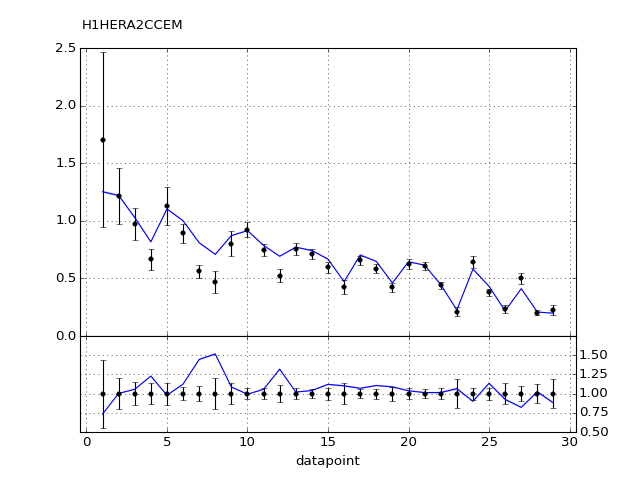
Return to Index
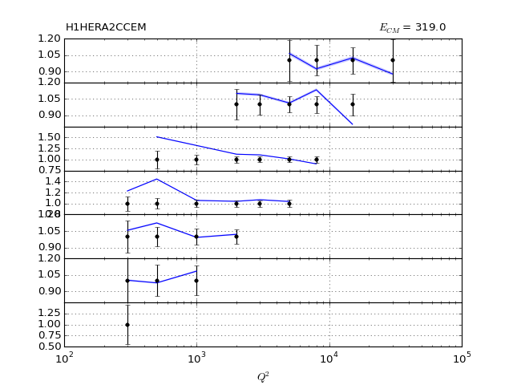
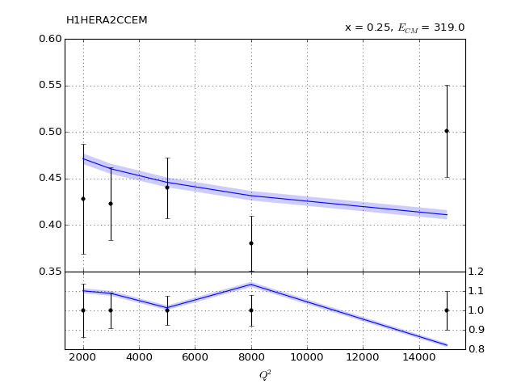10" title="" /> 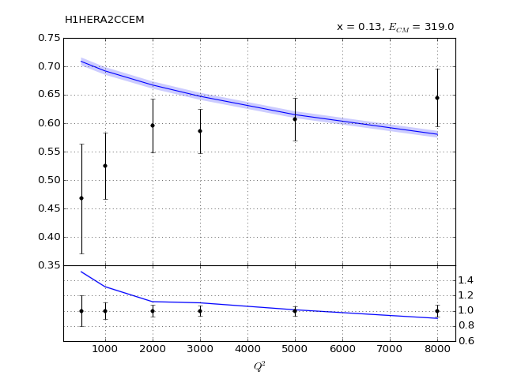20" title="" /> 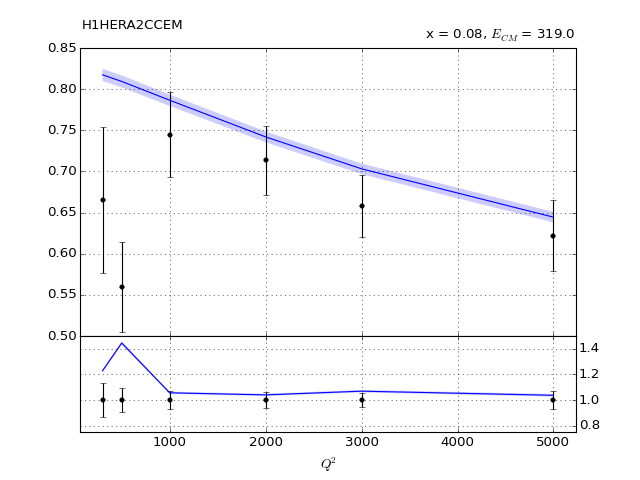30" title="" /> 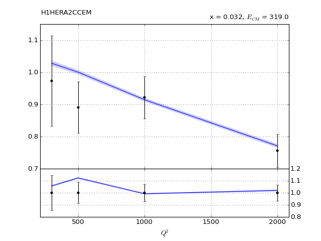40" title="" /> 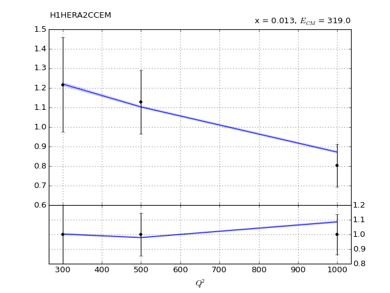50" title="" /> 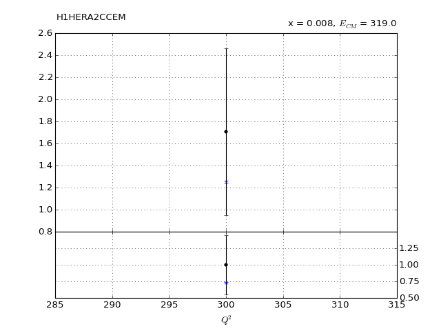60" title="" />

 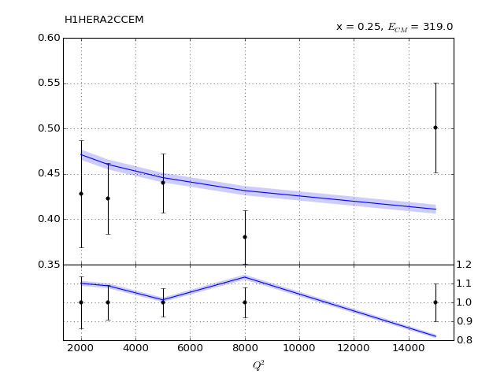10" title="" />
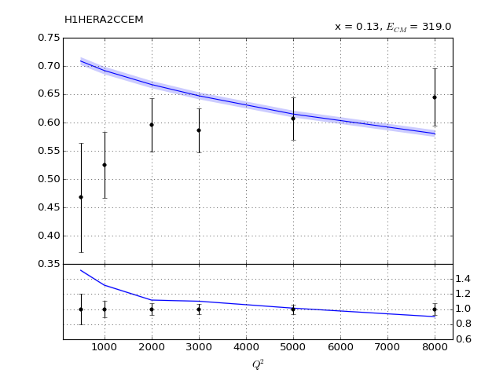20" title="" />
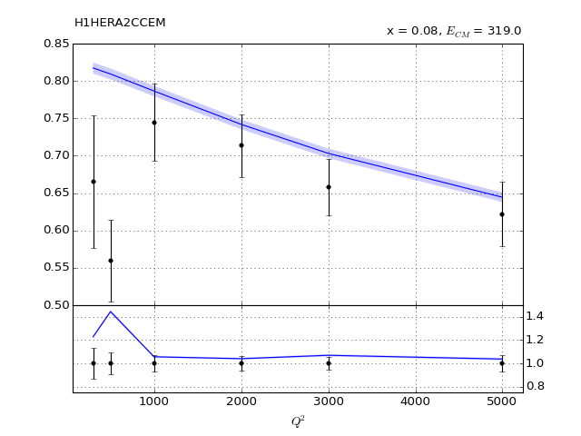30" title="" />
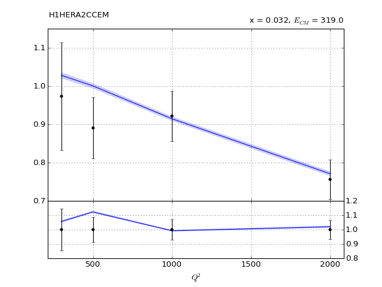40" title="" />
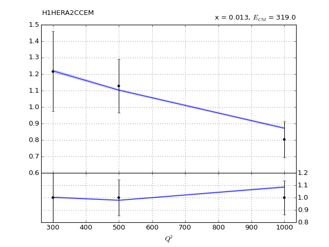50" title="" />
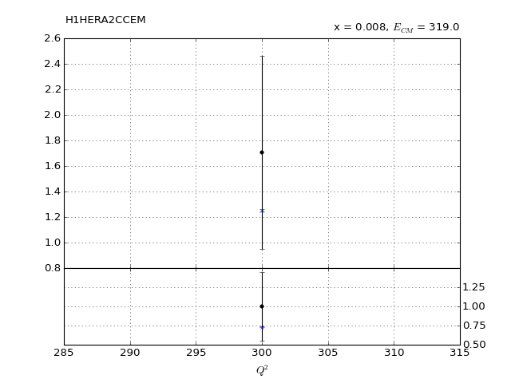60" title="" />
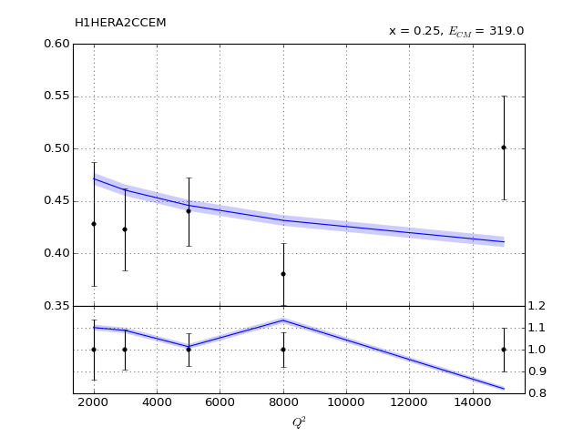10" title="" />
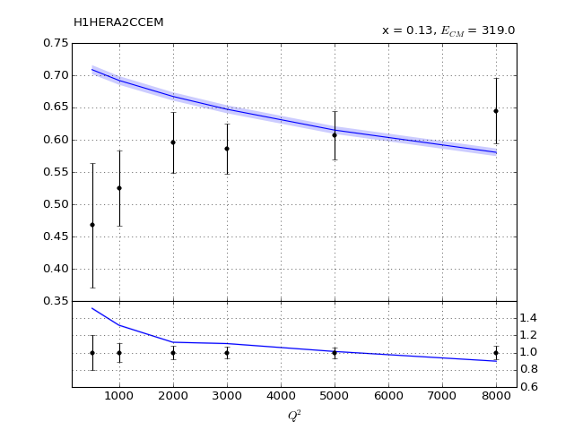20" title="" />
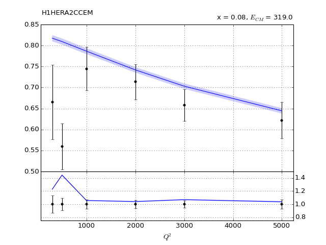30" title="" />
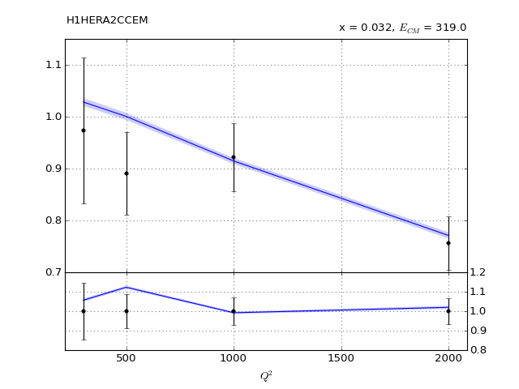40" title="" />
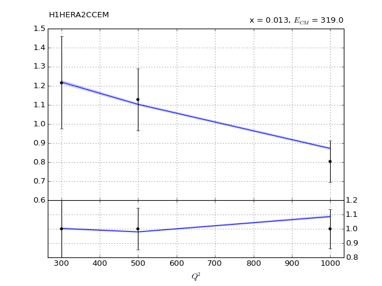50" title="" />
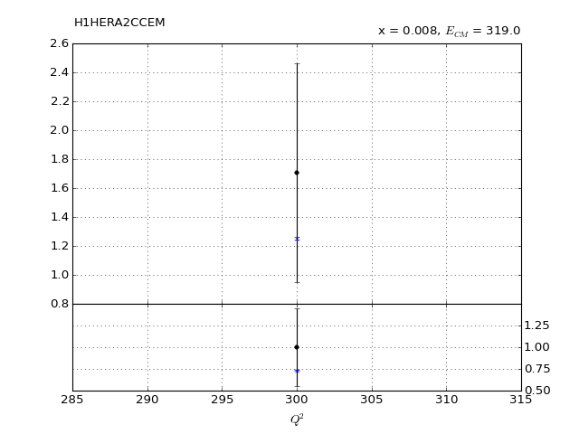60" title="" />